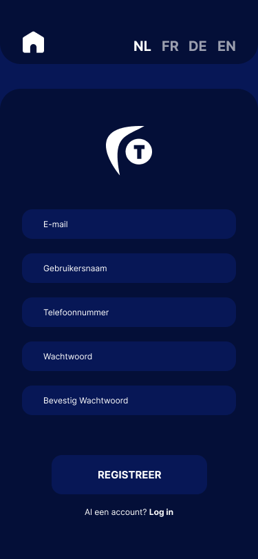
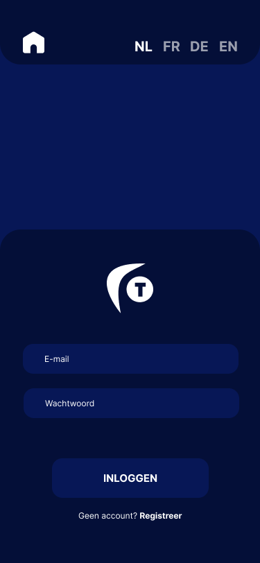
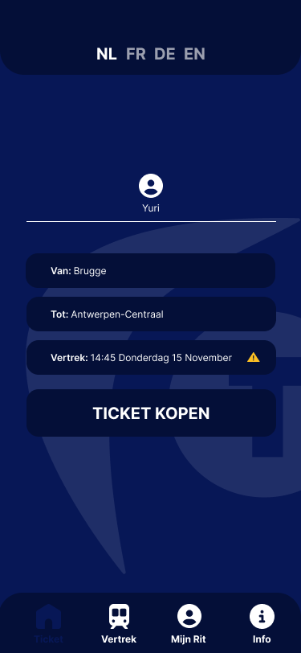
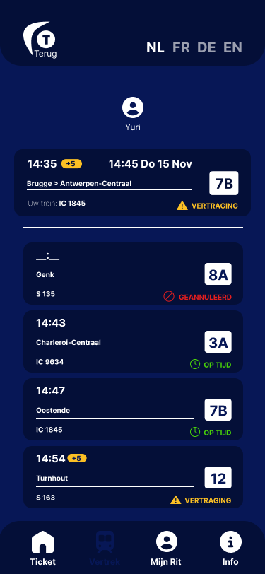
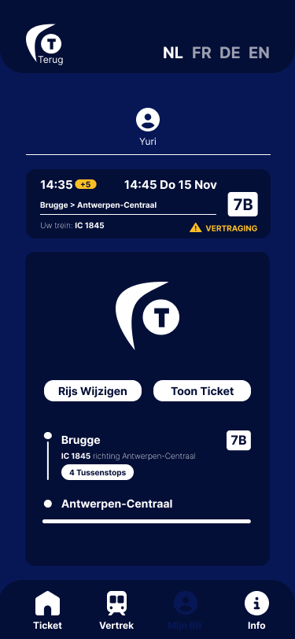
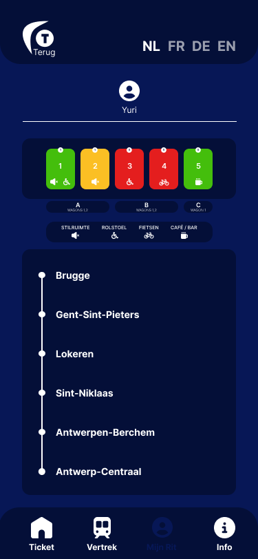
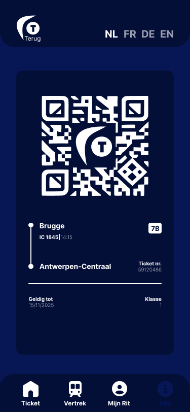

Week 7
In week 7 heb ik verder gewerkt aan mijn mobiele app. Ik heb kleine aanpassingen gemaakt aan de lay-out en typografie om het geheel overzichtelijker en aangenamer voor het oog te maken. Ik lette meer op spacing, uitlijning en consistentie tussen de verschillende schermen.
Door deze aanpassingen voelde de app meer afgewerkt aan en kreeg ik een beter beeld van hoe een gebruiker door de app zou navigeren. Het was fijn om te merken dat kleine veranderingen een groot verschil kunnen maken in de uitstraling van het ontwerp.






